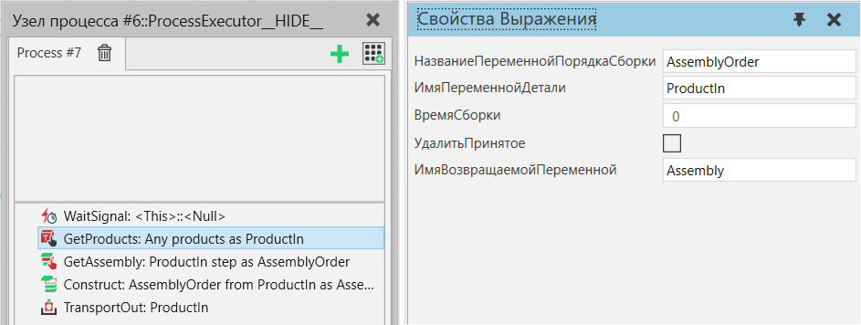

Создать (сборка) |
|
Создает пустой экземпляр сборки, а затем заполняет его заданными продуктами. Данный порядок сборки определяет как тип продукта сборки, который необходимо создать, так и слоты шаблона, в которые помещаются экземпляры продукта. Продукты помещаются в слоты шаблонов в правильном порядке сборки, и фильтры типа продукта слота шаблона должны принимать Экземпляры продукта. Оператор Создать не предназначен для создания пустых экземпляров сборки, поэтому по крайней мере один экземпляр продукта должен быть успешно помещен в созданный экземпляр сборки. Оператор Создать может дополнительно использовать линейное движение для перемещения заданных продуктов в назначенные им позиции в созданном экземпляре сборки. Продолжительность движения контролируется свойством AssemblyTime и может использоваться для приблизительной имитации времени, затрачиваемого на сборочные операции, или просто для целей визуализации.  Рисунок 1. Пример процесса, в котором используется некоторая внешняя логика для получения экземпляров деталей в контейнер компонента, из них создается новый экземпляр сборки и, наконец, экземпляр сборки транспортируется в следующий процесс.
|